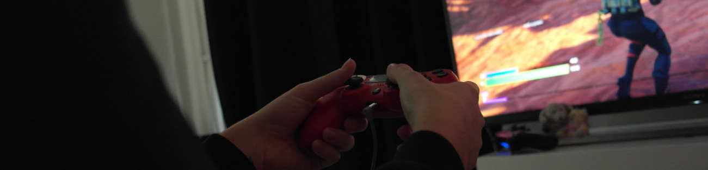

Gameverslaving komt de laatste jaren steeds vaker voor. Reden hiervoor is dat de games steeds beter worden en steeds meer inspelen op de wensen van de gebruiker en gamers daardoor niet kunnen stoppen. Maar wat maakt een game verslavend én waarom is gamen verslavend?
Een onderdeel van een game zijn de grafische elementen. Zorgen die voor die verslaving? Daarnaast is er de game industrie die daar ook een rol in speelt. Vraag is hoe zij zijn omgegaan met het tegengaan danwel stimuleren van gamen. En wanneer ben je nou eigenlijk verslaafd?
Daar zit je dan, alweer voor de zoveelste avond op rij voor je playstation Call of Duty te spelen. Telkens zeg je dat je na het volgende potje gaat stoppen, maar het lukt maar niet. Iedere keer als je af gaat denk je dat je het volgende potje gaat winnen en zeg je ‘nog een keertje’. Inmiddels zit je dus alweer op je 20e potje terwijl je 10 potjes geleden al zou stoppen… Dit is iets wat voor veel gamers een bekend verhaal is. Dan vraag ik me af, hoe kan dit? Wat maakt een game nou zo verslavend dat je maar door wilt blijven gaan?
Het gevolg van gamen kan vaak een gameverslaving zijn. Dit is een voorbeeld van technologisch determinisme. De introductie van games heeft het gedrag van de mens beïnvloedt. Je hebt vast wel gemerkt, dat door de jaren heen de jeugd veranderd. Dit komt onder andere dankzij games, dit is allemaal op de telefoon of bijvoorbeeld de playstation.
Dit zorgt ervoor dat kinderen veel meer binnen zijn en niet meer zoveel buiten spelen als vroeger. Wat uiteindelijk weer kan leiden tot een gameverslaving. Hierbij is het duidelijk dat technologie dus een bepalende factor is geweest.
Vuurwerk
Wanneer je een level haalt dan komt er vuurwerk op je beeldscherm. Dit is voor spelers vaak onbewust toch motiverend om door te gaan. Dit wordt eigenlijk bij alle spellen wel gedaan, wat voor soort game het is en ook vaak op een subtiele manier waardoor je het misschien niet meteen door hebt. Volgens Meggy Linssen (persoonlijke communicatie, 26 oktober 2021) is 20 jaar en ex-gameverslaafde verteld dat deze kleine dingen juist de dingen zijn die het spel verslavend maken.
Buiten het vuurwerk en de explosies zijn er natuurlijk nog veel meer elementen in een game die hem aantrekkelijk maakt, dat ligt natuurlijk wel aan wat voor soort game je speelt. Denk aan spellen met een verhaallijn, dit is een heel populair element.
Bij een spel met een verhaallijn, houdt het spel de speler bezig met de wereld die gecreëerd is. Spelers voelen zich gehecht aan de karakters en willen dan graag doorspelen om te zien hoe het verhaal zich vordert. Veel populaire games werken met dit element, denk aan spellen zoals: GTA (grand theft auto), Avengers, Spider-man, etc. Daarnaast worden games natuurlijk ook iedere keer grafisch beter, waardoor het nog aantrekkelijker wordt.
Veel games maken hun game aantrekkelijk door er een online multiplayer element aan toe te voegen. Denk aan spellen zoals Fortnite en Call of duty, deze spellen houden zich vooral bezig met multiplayer. Mensen vinden multiplayer vaak leuk omdat ze dan steeds met andere spelers of vrienden kunnen spelen. Dit zorgt voor verschillende uitdagingen waardoor je steeds een andere ervaring hebt. (Plural sight, 2014)
Gokken
Wat wordt er eigenlijk gedaan aan gameverslaving? Dan heb ik het niet over klinieken, maar wat doet de overheid er aan? De meest bekende wet is natuurlijk de leeftijdsgrens. Volgens artikel 240 A mogen winkels geen games met de leeftijdsgrens 16 verkopen aan kinderen onder de 16, hetzelfde geld voor 18+ spellen. Alhoewel dit ook met bijvoorbeeld geweld in de spellen te maken heeft, denk ik ook dat dit jongeren en kinderen behoed voor populaire spellen die toch nog wel eens erg verslavend kunnen zijn.
Onlangs zijn er ook nog wat nieuwe ontwikkelingen gekomen. In bepaalde games kun je vaak pakketten kopen met extra spullen die je verder kunnen helpen in de game. We spreken dan over zogenaamde ‘lootboxes’. Soms kun je ze gratis krijgen, maar soms moet je ze ook kopen met echt geld. Sommige van deze lootboxes worden volgens de wet van Nederland gezien als gokken. Als je er meer mee verdiend dan dat je er aan uit geeft, wordt het erkend als gokken. (Gameninfo)
Veel mensen vinden dit te weinig. In tegenstelling tot Nederland heeft de regering van China wel actie ondernomen. Vanaf 1 september 2021 mogen jongeren in China nog maar van 20:00 tot 21:00 uur in het weekend gamen om verslaving te voorkomen. Dat zou dus betekenen dat ze maximaal drie uur per week zouden moeten gamen. Als je het mij vraagt, is dit nogal drastisch en erg overdreven. Maar Ervaringsdeskundige Meggy geeft aan dat het inderdaad wel heftig is, maar voor sommige mensen wel nodig. Het kan wel iemand zijn leven verpesten. (AD, 2021)
Verslaving
Wanneer ben je gameverslaafd? Als ik iedereen deze vraag stel, denk ik dat ik hier een heleboel verschillende antwoorden op krijg. Het heeft niet per se te maken met hoeveel uur je gamet, alhoewel dit natuurlijk een rol speelt. Je moet ook kijken naar bijvoorbeeld afspraken maken. Kan je je aan de gemaakte afspraken houden?
Stel je voor: je spreekt met jezelf af dat je twee uurtjes gamet en daarna ga je aan school werken. Als je je niet kan houden aan dit soort afspraken kan dat een indicatie zijn dat je misschien wel gameverslaafd bent. Meggy verteld dat zij heel erg merkte dat haar schoolprestaties verslechterde, zij is zelfs van VMBO-T naar kader gezakt. Daarnaast werd haar vriendenkring als maar kleiner.
Er bestaat wel een classificatie, om te worden gezien als gameverslaafde. Hierin staan negen punten, wanneer je voldoet aan vijf van deze punten, ben je gameverslaafd. Dit zijn drie punten van de classificatie, de persoon: -Houdt zich voornamelijk bezig met gamen, het is een obsessie. -Wil almaar meer tijd besteden aan gamen. -Is interesse in andere activiteiten verloren, en heeft vrijwel geen hobby’s meer buiten gamen. (Wayenberg)
Aan de gamers onder ons, denk eens na voor jezelf. Als je dit artikel leest, herken je jezelf in sommige dingen? Ben je misschien zelf gameverslaafd?